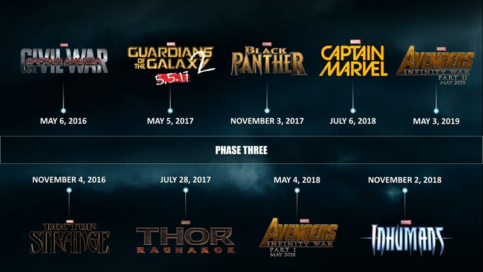

von Bettina Petrik
Marvel's The Avengers 2: Age of Ultron (© Marvel)
(bp) – Marvel ist toll. Wer schon mal die Büroräumlichkeiten des Mutterschiffs vom Corona Magazine, den iFuB-Verlag betreten hat, kann bezeugen, dass diese mit Fanartikeln nur so zugepflastert sind. Das geht soweit, dass man sich in der Redaktion darum kabbelt, wer denn nun die heißersehnte Pressevorführung des aktuellen Marvel Cinematic Universe-Films, Marvel's The Avengers 2: Age Of Ultron, besuchen darf, und dass die erste reguläre Vorstellung nach Kinostart zum Betriebsausflug wird. Samt den Mitarbeitern standesgemäß eingekleidet im Marvel-Cosplay (Fotos hiervon zu verbreiten, wurde der Autorin dieses Artikels bedauerlicherweise unter Androhung von Red Bull-Entzug untersagt).
Nicht umsonst werden allerdings gerade in Fan- und Kritikerkreisen wie diesem bis lange nach Dienstschluss hitzige Diskussionen über eins der erfolgreichsten Franchises unserer Zeit geführt. Das MCU steht nicht nur für Unterhaltsamkeit, atemberaubende Effekte und auf einzigartige Weise ineinander verschlungene Elemente, eine Idee, die längst Schule macht. Was Marvel 2008 mit Iron Man begann, hat es vorher in dieser Form nicht gegeben, und der Erfolg ist verdient.
Das perfekte Bild bröckelt
Und doch schwächelt das MCU in den letzten Jahren. Da gab es von den Kritikern verrissene Fortsetzungen wie Iron Man 3 und TV-Serien wie Marvel's Agents Of S.H.I.E.L.D. (beide 2013), die völlig im Glanz der DC-Konkurrenz verblassten. Da wurden den Zusehern an uninteressanten Bösewichten leidende Filme wie Thor – The Dark Kingdom (2014) vorgesetzt. Und vor allem eine Facette der Mega-Blockbuster in Marvels Phase 2 (Filme ab Iron Man 3 bis Ant-Man [2015]) gerät immer wieder ins mediale Kreuzfeuer: das Frauenbild.
In Phase 1 gab es dabei trotz eines fehlenden Solofilms für eine Marvel-Heldin nicht viel zu bemängeln. Die eigentliche Planung der Ursprungsgeschichten rund um Iron Man (Robert Downey Jr.), Captain America (Chris Evans) und Thor (Chris Hemsworth) sah auch einen Black Widow-Film vor, der aber letztendlich nicht ins Konzept passte. Dafür wurden Figuren wie Peggy Carter (Hayley Atwell), Pepper Potts (Gwyneth Paltrow), Jane Foster (Natalie Portman) und Betty Ross (Liv Tyler) vorgestellt. Jede auf ihre eigene Art stark und hervorstechend, was das veraltete Hollywood-Klischee des schmachtenden, verletzlichen Mädchens an der Seite des strahlenden Helden geradezu zerschmetterte.
Umso größer war die Enttäuschung, als auch in Phase 2 weit und breit von einem Heldinnen-Einzelfilm nichts zu sehen war. Erst als der größte Konkurrent am Markt, DC, letzten Herbst mittels der Freigabe für Wonder Woman (2017) mit gutem Beispiel voranging, geriet Marvel in Zugzwang. Nun kann man sich in der mit Captain America 3 (2016) beginnenden Phase 3 auf Captain Marvel (2018) freuen, ein ebenso wie Black Widow sehr beliebter, für Feminismus stehender Comic-Charakter. Es ist ein Schritt in die richtige Richtung. Wenn es auch befremdlich anmutet, dass das Startdatum dieses Films sofort verschoben wurde, als Marvel Anfang 2015 endlich den lange ersehnten Deal mit Sony schloss und nun auch Spider-Man in das MCU holen kann. Hierbei muss man bedenken, dass die Standard-Ausrede der Marvel-Produzenten, wenn Fans nach einem Black Widow-Film verlangten, war, dass man dafür nicht den sogenannten großen Plan des Franchises ändern könnte. Für Spider-Man ist man offensichtlich gewillt, sich zu verbiegen. Für eine Heldin nicht.
Die Frage nach dem Warum
Traurig, überraschend jedoch nicht. Spider-Man ist sogar im sonst eher Superhelden-verwaisten deutschen Raum so gut wie der einzige Marvel-Held, den man auch in jedem ordinären Supermarkt auf Fan-Artikeln bewundern kann. Die Jungs lieben ihn – die großen und die kleinen. Das Zielpublikum von Comic-Verfilmungen ist eben hauptsächlich männlich. Ein Disney-Insider gab kürzlich ein brisantes Geheimnis aus den Marvel-Studios bekannt. Dort ist der allgemeine Konsens, dass Disney die Marvel-Studios schlicht nicht für das weibliche Publikum aufgekauft hat. Für die gibt es schließlich die Prinzessinnen.
Dieser Herabsetzung gegenüber stehen andere Zahlen aus dem Fandom. Auf der San Diego Comic-Con – auch von der Autorin dieses Artikels besucht – ist der Anteil an weiblichen Besuchern überwältigend. Um auf der SDCC in die berühmte Hall H-Vorführung von Marvel und DC zu kommen, ist tagelanges Zelten und Durchhaltevermögen gefragt – und auch hier waren die rund 6.000 glücklichen Anwesenden größenteils weiblich. Auf Social Media-Websites wie tumblr sind jene Fans, die das Franchise mit Fanart, Fanfics, Merchandise-Käufen und unzähligen Kinobesuchen unterstützen, zum großen Teil weiblich. Längst ist das Geek Sein keine Männerdomäne mehr. War es vielleicht noch nie, doch seit dem großen MCU-Aufschwung muss sich der weibliche Durchschnitts-Fan nicht länger mit seinen Comics im stillen Kämmerlein verkriechen, in der immer wieder bestätigten Angst, als »Fake« bezeichnet zu werden, wenn er im Marvel-Shirt ins Kino geht. Die Entwicklung ist nicht zu übersehen.
Trotzdem richten sich die Marvel-Comics und -Filme in erster Linie an das männliche Publikum, und geben ihnen die Besucherstatistiken recht. Beim Filmgucker an sich ist das klassische Gesellschaftsmodell – Action-Figuren für die Jungs, Baby-Puppen für die Mädchen – oft doch noch stark zu spüren. Der Umschwung kommt, aber er kommt langsam. Wünschenswert wäre es, wenn Marvel und Disney hier mehr Einsatz zeigen würden. Man würde meinen, es wäre schon in ihrem rein kapitalistischen Interesse, die Kundengruppe zu erweitern.

Marvel Cinematic Universe – Phase 3 (© Marvel)
Die wahre unsichtbare Frau
Stattdessen werden weibliche Superheldinnen konsequent aus dem Merchandise ausgeschlossen. Auf T-Shirts zu Guardians Of The Galaxy (2014) werden z.B. alle Teammitglieder außer Gamora (Zoë Saldaña) abgebildet. Spielfiguren von Black Widow (Scarlett Johansson) suchte man schon zu Zeiten von Marvel’s The Avengers (2012) vergeblich, wenn man nicht gerade bereit war, rund 300 Euro für eine Hot Toys-Statue auszugeben. Verfügbare Produkte für Frauen in Shops wie Elbenwald oder den offiziellen Marvel-Läden sind überschaubar.
Und dann sind da die Filme, die in der Phase 2 einen bedauerlichen Rückschritt erleben. Gamora, Tochter des stärksten Superschurken aller Zeiten und selbst eiserne Kriegerin, muss gleich zweimal vom heldenhaften Star-Lord (Chris Pratt) gerettet werden. Die geniale Wissenschaftlerin Maya Hansen (Rebecca Hall), zum liebestollen Bösewicht degradiert, unzeremoniell erschossen und von Tony Stark noch mit einem Witz hinterher garniert. Asgard-Königin Frigga (Rene Russo), die sich so gut mit dem Schwert gegen Langeweile-Thor Gegner Malekith (Christopher Eccleston) wehrt, dass sie dann von selbigem durchbohrt werden muss, weil man offensichtlich nicht mehr wusste, was man mit ihr sonst tun sollte. Die zweite Staffel von Marvel's Agent Carter (2015), das leuchtende Gegenbeispiel in Sachen realistischem Frauenbild mit hervorragender Charakterisierung, hängt im Limbo fest, hingegen wurde Daredevil (2015) bereits für eine Fortsetzung bestätigt, als der Beginn noch warm in der Netflix-Auslage stand.
Enttäuschung trägt den Namen Whedon
All dies sollte in Avengers 2 besser werden. Schließlich ist dort Joss Whedon als Regisseur am Start, der in Avengers 1 eine hervorragende Black Widow-Charakterisierung ablieferte. Wenn man sich näher mit Whedons bisherigen Werken beschäftigt, mochte man allerdings schon misstrauisch an die Sache herangehen. Whedons Umgang mit Charisma Carpenters Schwangerschaft zu Zeiten von Angel - Jäger der Finsternis (1999) oder die frauenverachtende Handlung, welche bei den nie gedrehten Episoden von Firefly - Der Aufbruch der Serenity (2002) für die Prostituierte Inara angedacht war, stehen den Motiven des selbst erklärten Feministen gern im Weg.
Und diese Autorenschwäche schlägt in Avengers 2 voll zu. Black Widow, bisher als konstant geheimnisvolle, vielschichtige Figur in den Filmen präsentiert, mutiert zum verliebten Schulmädchen mit Herzchenaugen, das sich im wahrsten Sinne des Wortes ausgerechnet dem Mann an den Hals wirft, der ihr in Avengers 1 als Einziger auf der Welt Todesangst machte. Erzwungen, kontextlos, aus dem Nichts kommend wirken diese Liebesszenen mit Bruce Banner (Mark Ruffalo), kommt der plötzliche Wunsch der bisher furchtlosen und energischen Heldin, das Team zu verlassen und mit (besser: auf) dem strahlenden Helden in den Sonnenuntergang zu reiten. Dem einen oder anderen Kinobesucher entlockte der unweigerlich folgende Kuss zwischen diesen Charakteren ein entnervtes Stöhnen. Charakter-Kontinuität sieht anders aus. Whedon trägt nicht zu seiner Verteidigung bei, wenn er offen zugibt, dass er nur das von ihm so beliebte Die Schöne Und Das Biest-Thema unbedingt im Film unterbringen wollte. Von Betty Ross, Banners eigentlicher großer Liebe aus Der Unglaubliche Hulk (2008), hat man übrigens nie wieder etwas gehört.
Der hingegen ordentlich eingeführte, als emotional, liebevoll und rachsüchtig zugleich porträtierte Charakter der Scarlet Witch (Elizabeth Olsen) ist da ein schaler Trost. Vor allem angesichts der Tatsache, dass Maria Hill (Cobie Smulders), bekannt als kompetent, schlau, kampfstark, in Avengers 2 zu Tony Starks Sekretärin mutiert, die gnädigerweise auch noch ein paar nutzlose Kugeln abfeuern darf.
Einziger Lichtblick: Neuzugang Laura Barton (Linda Cardellini) als Hawkeyes Ehefrau, eine sehr überraschende Entwicklung für Clint Barton. Einfühlsam umgesetzt diese Handlung, selbst in der wenigen Leinwand-Zeit kann man Laura bereits als durchaus tiefgängigen Charakter mit fester Agenda erkennen. Nach dem sonstigen Versagen der Phase 2 bleibt allerdings die Befürchtung, dass Frau und Kind des Superhelden genau wie in den zugrundeliegenden Comics nur eingeführt wurden, um sie später einmal auf dem Höhepunkt des seichten Schreibens als Kanonenfutter zugunsten von einfacher Charakterisierung des Mannes im Bild zu verheizen. Man will es nicht hoffen.
Was bringt die Zukunft?
Trotz dieses verschenkten Potentials ist auch Avengers 2 wieder ein sehr unterhaltsamer Film, der dem Durchschnitts-Kinogänger gefallen, aber wohl kaum im Gedächtnis bleiben wird – ähnlich wie die anderen Phase 2-Produkte. Der im Herbst folgende Ant-Man wird da kaum eine Ausnahme bilden, bedenkt man, dass die Titelfigur hauptsächlich dafür bekannt ist, seine Frau misshandelt zu haben. Bezeichnete Heldin gehört in den Comics eigentlich zu den ersten Avengers, im MCU ist sie aber wenigstens schon von Beginn an tot, womit ihr vermutlich eine ähnlich entwürdigende Behandlung erspart bleibt.
Phase 2 bleibt durchwachsen, mal abgesehen von The Return Of The First Avenger, der dem Black Widow-Charakter um einiges gerechter wird als Avengers 2. Leider bildet ausgerechnet diese ersehnte Fortsetzung keine Ausnahme und weist auf der Kritikerseite Rotten Tomatoes im Moment mit 79 % dieselbe Bewertung wie der wenig geliebte Iron Man 3 auf. Wünschenswert ist in diesem Zusammenhang, dass genug Kritiker und auch Fans die Verantwortlichen in Rezensionen und auf Social Media-Kanälen wissen lassen, dass auch der Marktführer in Sachen Comic-Verfilmungen nicht frei von Fehlern ist, und dass die kommenden Produktionen zurück auf den richtigen Weg finden.
Denn wir brauchen mehr Heldinnen auf der Leinwand, im TV und in Comics, und mehr weibliche Fans im Fandom, nicht weniger.
Weiterführende Informationen zum Thema:
http://de.wikipedia.org/wiki/Marvel_Cinematic_Universe
http://marvelcinematicuniverse.wikia.com/wiki/Marvel_Cinematic_Universe_Wiki